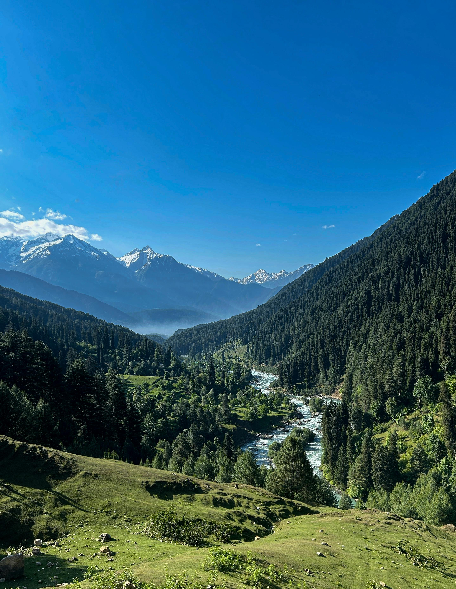
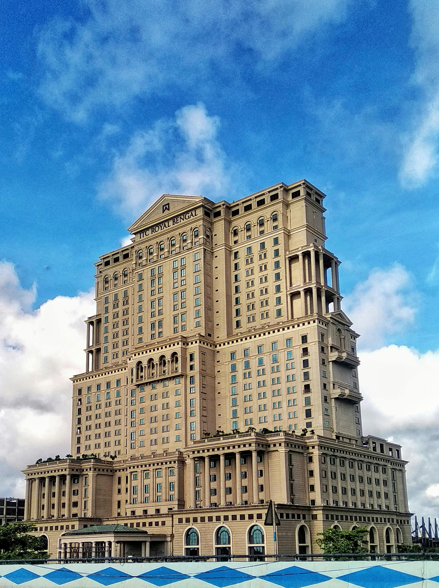
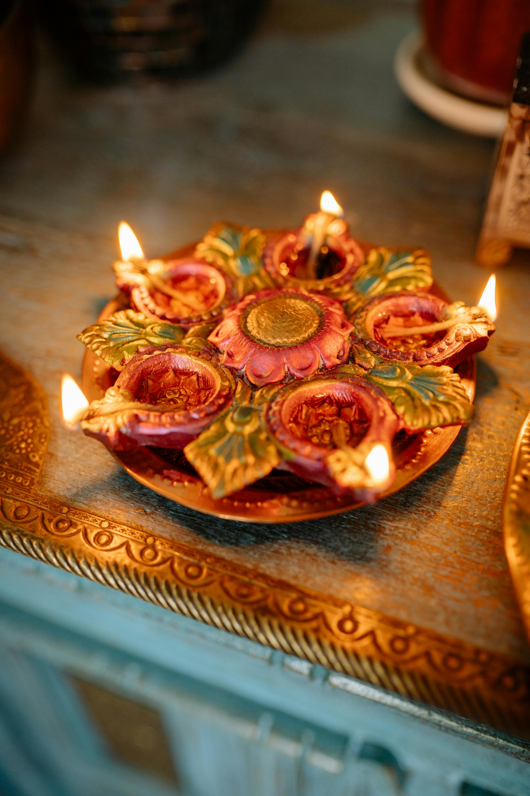
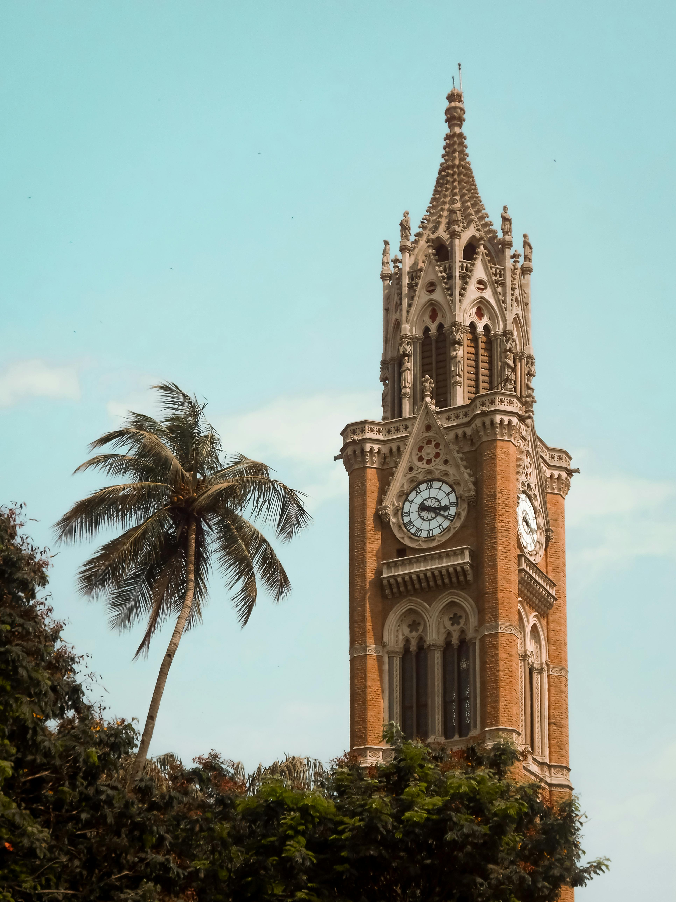
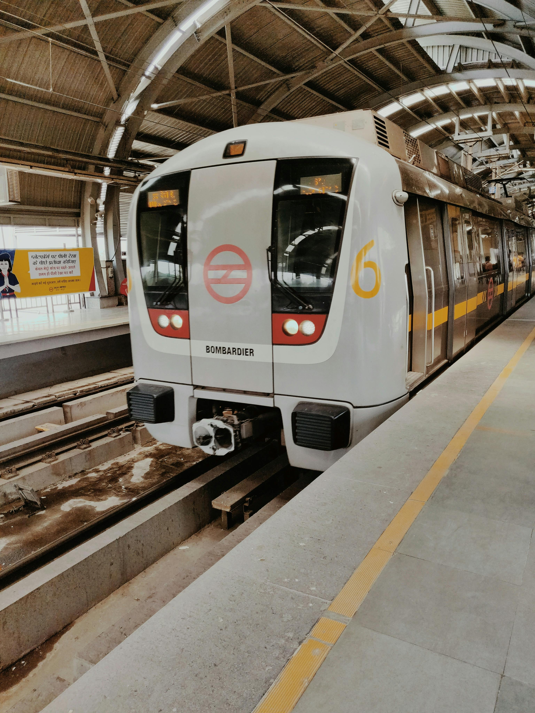

Best Travel Tips

- Best time to visit: October to March is ideal for pleasant weather.
- Dress modestly: Wear conservative clothing in temples and rural areas.
- Stay hydrated: Drink bottled water to avoid stomach issues.
- Be cautious of street food: Eat only from trusted vendors.
- Learn local phrases: Knowing basic Hindi can enhance your experience.
- Respect local customs: Familiarize yourself with local etiquette.
- Travel Insurance: Get insurance for health, theft, and cancellations.
- Cash and Cards: Carry cash for rural areas as cards may not be accepted.
Best Cuisines and Dining Recommendations

- Biryani: Fragrant rice dish with marinated meat.
- Butter Chicken: Tender chicken in creamy tomato sauce.
- Masala Dosa: Crispy crepe with spiced potatoes.
- Chaat: Popular street snack with various flavors.
- Rogan Josh: Flavorful lamb curry from Kashmir.
- Gulab Jamun: Sweet dessert soaked in syrup.
- Pani Puri: Hollow puris filled with spicy water.
- Palak Paneer: Spinach and cottage cheese dish.
Best Accommodation Options

- Luxury Hotels: Taj Hotels, Oberoi Hotels, and ITC Hotels.
- Mid-Range Hotels: Radisson, Lemon Tree, and Holiday Inn.
- Budget Hostels: Zostel, Backpacker Panda.
- Homestays: Experience local culture in family-run accommodations.
- Guesthouses: Affordable and friendly options across the country.
- Eco-Resorts: Stay in nature-friendly accommodations in places like Kerala and Uttarakhand.
Best Local Culture and Traditions

- Festivals: Diwali, Holi, Eid, Christmas celebrated with great enthusiasm.
- Dance and Music: Classical and Bollywood music, traditional dance forms.
- Art and Craft: Handicrafts and textiles unique to each region.
- Languages: Over 22 officially recognized languages spoken across the country.
- Spirituality: Birthplace of major religions, with yoga and meditation practices.
Best Top Tourist Attractions

- Taj Mahal: Iconic symbol of love and UNESCO World Heritage Site.
- Jaipur’s Pink City: Historic palaces and vibrant bazaars.
- Kerala Backwaters: Scenic houseboat experiences.
- Varanasi: Spiritual significance along the Ganges River.
- Goa: Stunning beaches and vibrant nightlife.
- Golden Temple: Holiest site for Sikhs with stunning architecture.
- Ranthambore National Park: Known for tiger sightings and wildlife.
- Ajanta and Ellora Caves: Ancient rock-cut caves with murals.
Best Transportation Guides

- Air Travel: Extensive network of domestic flights.
- Trains: Indian Railways offers scenic and affordable travel.
- Road Transport: Buses and taxis available in cities.
- Auto Rickshaws: Inexpensive and fun urban transport.
- Metro Systems: Efficient metro in major cities like Delhi and Mumbai.
- Walking and Bicycles: Best way to explore smaller towns.
Best Outdoor Activities and Adventure

- Trekking: Popular in the Himalayas, including the Everest Base Camp trek.
- Rafting: White-water rafting in Rishikesh.
- Wildlife Safaris: Explore national parks like Ranthambore and Jim Corbett.
- Beach Activities: Water sports and relaxation in Goa and Andaman Islands.
- Camping: Adventure camping in places like Spiti Valley.
Best Weather and Time to Visit

- Winter (October to March): Cool and pleasant, ideal for sightseeing.
- Summer (April to June): Hot temperatures, best for hill stations.
- Monsoon (July to September): Refreshing rains, lush landscapes but may disrupt travel.